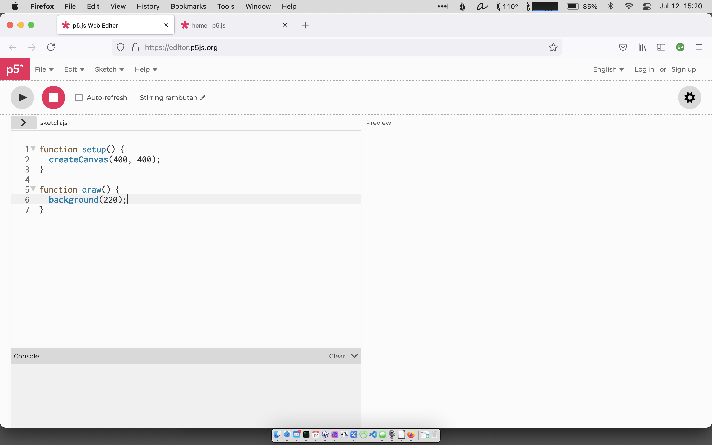

Generative Art
Workshop: Generative Art
There are lots of ways to create art, and lots of ways to learn about programming. In this workshop we're going to use the "Processing" platform on your computer to draw pictures, create generative art, and write/play graphics-based games.
Agenda
1.1. The Processing platform for JavaScript
Processing is a library created to allow artists and programmers to create visual "sketches" by using code.
You can learn more about processing at processing.org. You can learn about using the JavaScript programming language with Processing at p5js.org.
But what you really want to do is just get started by using the online p5js editor.
Let's go!
1.2. The editor interface
Using your browser, go to editor.p5js.org. You'll see an online interface that looks like this:
The left half of the screen is dedicated to writing code, and the right half of the screen will display a Preview of the visual results of that code whenever we click on the gray "Play" button at the upper left corner of the window. There is also a small "Console" window below our code that we can use to help debug our code.
- Click on the gray "Play" button now to see what happens.
You should see a gray square area appear in the Preview window on the right. The code is running! (Not that there's much to see at this point.)
Click the "Stop" square, and click on "Sign Up" to create an account with your polytechnic.org Google account.
Now we're ready to get started.
1.3. setup() and draw() functions
A function in programming is a just the name for a chunk of code that does something. In our Processing work there are two important functions for writing our "sketches":
- The setup() function is executed once when the code begins running. This is usually where the Canvas is created (see below) and initial background colors are set up. Variables are declared and initialized in the space above the setup() function.
- The draw() function is executed next, and this is where most of the interesting code will go. Note: The draw() function is executed repeatedly in a type of infinite loop. As soon as all the code is executed once, the draw() function runs again, over and over until the program is stopped.
This will allow us to write some really interesting programs!
Add the lines to your sketch as shown in the screenshot here. Then click the "Play" button. You should see the value of test repeatedly printed out in the Console, confirming that the draw() function is being repeatedly run, over and over again.
Stop the program and delete those three lines before continuing with our exploration.
1.4. The canvas, background, and colors
The canvas represents the area that is available for us to draw on. Currently, it is specified as 400 pixels wide and 400 pixels tall. Let's change the canvas to 600 pixels by 400 pixels:
Run the sketch again and you should see the gray-colored canvas as a landscape-oriented rectangle.
The term pixel refers to a "picture element" on the screen, one "dot" of light on your screen. A single point of light on a computer screen is not very large, but the p5.js environment allows us to keep track of them all and use them in creating our sketches.
The background() instruction specifies the color of the canvas's background. The parameter is currently set to 220, but it can be specified as something else, in one of two ways.
If you're just working with different black-gray-white shades, the value can be anything from 0 (black) to 255 (white). Here, 220 is pretty close to 255, so it's a light gray color. Try changing it to a lower number—maybe 80?—and run the program again to see what the background looks like now.
1.4.1. Colors

Of course what we really want to be able to use is colors, and these can be specified in a few ways. The easiest perhaps, is using Red-Green-Blue (RGB) values.
The primary light colors are red, green, and blue, and by combining these colors in varying degrees, all the colors of the rainbow can be produced.
The diagram to the right indicates that red light and green light, when combined, will produce a yellow color. (If you were to combine red and green pigments, on the other hand, you'd have a brown/gray mess.)
To specify different colors for use in your artwork you can indicate how much of each primary color—red, green, and blue—you wish to use, with a value from 0-255.
So, if you want "red" to be the background of your window, you'd use the instruction
To specify a magenta color, you'd use the instruction
Crazy background colors are interesting, but most sketches use a simple black, white, or gray background, however, and save the use of color for the other elements on the screen.
2. Making drawings
Although it's not really generative art, let's learn about the pixels on the page by creating some simple drawings.
2.1 Orienting yourself in the window
Each "picture element," or pixel on the screen, can be individually specified by its column and row. Columns are numbered from left to right, from 0 to width - 1 across the screen, and rows are numbered top to bottom, from 0 to height - 1, down the screen.
For a 640 × 480 window, the coordinates would look like this.

2.2. Setting the Fill; Drawing Shapes
In order to be able to draw on the screen, we can use a number of built-in functions. To use these you'll typically need to specify a number of parameters.
The ellipse(x, y, width, height) function, for example, draws an ellipse on the screen.
Copy this script into the sketch window and try running it:
Notice that the stroke weight (line thickness) is "2" and that it has a blue color (0, 0, 255). The body of the ellipse has a fill that is red (255, 0, 0), and the ellipse is located at x=100, y=200, on the screen, and has a width of 50 pixels and a height of 30 pixels.
Each of these fill and stroke commands needs to be given before a line or shape is drawn. Once the fill/stroke have been changed, those new values will continue until they are reset again.
Here are a few shapes to experiment with:
2.3. Planning a drawing
At this point, we can issue commands to draw a simple picture. Consider drawing a simple house with the sun shining down on it. To save myself a lot of trouble, I'd plan out the sketch by drawing it on graph paper first...
I've identified important pixels in that diagram, and some shapes and colors. Then I could write the code to make that happen.
When I entered that code and ran it, I realized the sun was too small, so I made the radius a little bigger:
It needs some color, though. Yes? Set the different fills before each shape gets drawn:
Notice I added a door there to make it look a little more like a house.
2.3.1. Reminder: draw() runs continuously
Although you can't really tell in this sketch, the draw() function is redrawing this picture approximately 30 times a second. We can see that by making one small change in our sketch.
Instead of creating a yellow fill for the sun, let's make a random color for the sun:
This chooses a random number 0-255 for the red value, 0-255 for the green value, and 0-255 for the blue value, to create a random color that is used for the fill. A new random color is chosen every time we run this fill instruction, which happens ~30 times a second!
Try it!
One more example of how we can use the repeating draw() function.
2.4. How animation works
When we redraw the screen some 30 times every second, we can produce an animation: draw an image, then draw a slightly different image, then draw another slightly different image...
In this version of the program, the sun's horizontal position x starts at 0 and increases by 2 every time the draw() function runs.
Note that the sun moves across the sky and passes in front of the house. Can you figure out how to fix that issue?
The command background(220); in our program clears the screen every time it is called, just before we draw the house in its same position and the sun in a slightly different position.
To see what happens when we don't clear the screen, remove that background(220) command (or comment it out) and see how it effects the running of your program.
3. Generative Art
3.1. What is generative art?
Generative art is typically considered as art that, at least in part, has been created with using an "autonomous system" such as a mechanism or machine. One type of generative art is algorithmic art, in which the art has been created with the assistance of a computer program.
The French artist Vera Molnàr was one of the first artists using computer algorithms as a medium.


Vera Molnàr
We're almost ready to create some generative art of our own. Let's learn about event listeners, and see if we can make our programs interactive.
3.2. Using "event listeners"
The previous program demonstrates how we can create simple animations, but we also want to have the user interact with our program.
3.2.1. mouseX and mouseY events
Clear out the code you've written and try this program:
In this script, mouseX and mouseY are two values that indicate the x,y location on the screen. In this version of the draw() function we're both drawing the circle at whatever location the mouse is located, and printing out those coordinates in the Console window (if you want to see their numeric value).
We say that the draw() function is "listening" for mouse events. If the mouse moves, if the mouse button is pressed, or if the mouse button is released, that information can be relayed to the script and our program can act on that information.
3.2.2. Interacting with mouse clicks
There are two common ways of interacting with a mouseclick.
One is the mousePressed boolean variable, which is true if the mouse is down. Change your draw() function so that it looks like this:
This version of the draw() function only puts a circle on the screen while the mouse button is pressed. If you move the mouse while the mouse is pressed, Processing will continue to put ellipses on the screen.
Because we're clearing the screen every time through the draw() function, we don't see the old circles on the screen. If you comment out the background(220); line then we won't clear the screen. Try that out and see what happens.
A second way of interacting with the mouse captures individual clicks. Just as Processing knows about the setup() and draw() functions, it looks for a mouseClicked() function. If a mouseClicked() function is defined for a program, then Processing will automatically call that function anytime the mouse is clicked.
Make the changes highlighted below to see an example of using mouseClicked().
3.3. Making Generative Art
The programs that we've written so far allow us to create images on the screen based on using the mouse and mouse-clicks. Another type of computer art is generative art, in which the program (written by us, and perhaps manipulated by us), creates the art.
This program uses pseudorandom values and Perlin "noise" to create random endpoints for a line, and repeatedly changes those endpoints.
Enter the program into Processing and run it.
Is this art?
3.4. Saving your Work
If you're writing programs that produce images that you want to capture, here's another use for the mouseClicked() function:
Include this function in your code—between the end of the setup() function and before the draw() function is a good place—and when you click the mouse/trackpad, whatever image is in the window will be saved to a file called capture.png in your Downloads folder on your computer, and then top the draw() loop from continuing to function (the noLoop() command).
3.5. More generative art
Modify your program so that the x2 and y2 variables are determined by the mouse location, so that you have some say in how the drawing is created.
Does the input you provide to this program make it seem more like "art" than what we had before?
3.5.1. Capturing key input
In addition to capturing mouse clicks (to save our program) we can identify when a user presses a key on the keyboard. There are a variety of ways to do this. In this example here, we're using the 1, 2, and 3 keys to indicated what color we want our art to be generated with. (Note that you'll need to click into the active drawing area for the keys to start to be recognized.)
3.6. Complex generative art
Use the final project code from the noiseorbit-tutorial and paste it into a new Processing sketch.
Also, take at look at these Generative Sketches to see what people are doing with generative art.
4. Graphical games
You can make a game out of almost anything. Take a look at this simple program that draws a circle that moves semi-randomly toward the cursor, growing bigger or smaller as it moves. Don't let it catch you!
Is this "game" creating something that we could call art?